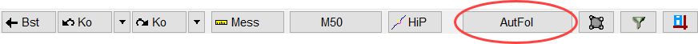
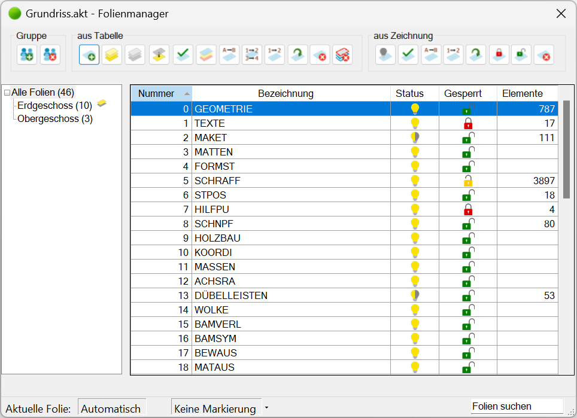
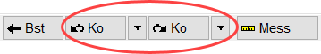
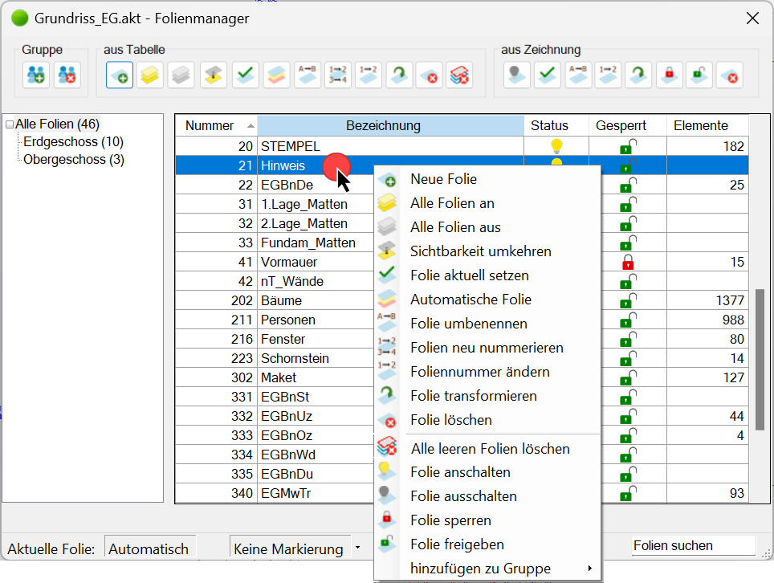
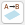
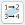

Folienverwaltung: Anlegen, Gruppieren, Sperren, Ein-/Ausblenden, Transformieren und Löschen von Folien.
Folienmanager öffnen
Klicken Sie in der unteren Menüleiste auf die Schaltfläche AutFol. Die Schaltfläche ist mit der aktuellen Folieneinstellung beschriftet, z. B. "AutFol", wenn die automatische Folienzuweisung eingeschaltet ist, oder "Texte", wenn Folie 1 aktuell gesetzt ist.
Untere Menüleiste:  |
Foliengruppen werden im Gruppenfeld (links im Dialogbereich) angezeigt. Um die in der Standardgruppe enthaltenen Folien individuell zu gruppieren, können neue Foliengruppen angelegt und die gewünschten Folien in die entsprechende Gruppe verschoben (kopiert) werden.
 |
Automatische Folienbelegung (Folienautomatik)
Wenn AutFol aktiviert ist (untere Menüleiste), werden die Zeichenelemente beim Konstruieren und beim Bewehren automatisch auf den für die jeweilige Funktion vorgesehenen Folien abgelegt. Der Wert "-1" in der Abfragezeile unter [Konst1 | Folien] bedeutet, dass die automatische Folienbelegung aktiviert ist.
Siehe: Liste der automatischen Folienbelegung
Aktionen zurücksetzen oder wiederherstellen
Um Änderungen wie das Umbenennen oder Löschen von Folien rückgängig zu machen oder wiederherzustellen, verwenden Sie die Korrekturfunktionen in der unteren Menüleiste.
 |
Siehe: Korrekturfunktionen
Optionen für das Markieren von Folien
Einzelauswahl |
Linksklick auf eine Tabellenzeile. |
Mehrfachauswahl |
Strg + linke Maustaste auf eine Tabellenzeile. |
Im Block |
Klicken Sie die erste Folie an, die markiert werden soll und anschließend, bei gedrückter Umschalt-Taste (Shift), die letzte Folie. Alle Folien, die sich zwischen den ausgewählten Folien befinden, werden markiert. |
Alle markieren |
Strg + A |
Optionen im Dialog "Folienmanager"
Erstellen und Löschen von Foliengruppen. Die Foliengruppen werden im Gruppenfeld angezeigt.
Neue Gruppe Erstellt in der Gruppenliste eine neue Gruppe. Geben Sie den Namen der Gruppe ein. Gruppe löschen Löscht die in der Gruppenliste markierte Gruppe. |
Verwalten und Bearbeiten von Folien über die Auswahl in der Folienliste.
Diese und weitere Funktionen sind auch über das Kontextmenü erreichbar. Klicken Sie hierfür mit der rechten Maustaste einen Tabelleneintrag an. Wenn Sie mehrere Folien markiert haben, werden nur Funktionen angezeigt, die auf die markierten Folien angewandt werden können.
 |
|
Erstellen einer neuen Folie in der Gruppe Alle Folien. Öffnet den Dialog Neue Folie.
Alle Folien an Alle ausgeschalteten Folien werden eingeschaltet. Diese Funktion bezieht sich auf die markierte Gruppe und auf "Alle Folien". Alle Folien aus Alle sichtbaren Folien werden ausgeschaltet. Diese Funktion bezieht sich auf die markierte Gruppe und auf "Alle Folien". Alle eingeschalteten und teilweise sichtbaren Folien werden ausgeschaltet (s. Folienliste). Zugleich werden alle ausgeschalteten Folien eingeschaltet. Folie aktuell setzen Die markierte Folie wird als aktuelle Folie gesetzt. Auf der Schaltfläche AutFol wird der Name durch die ersten sechs Buchstaben der aktuellen Folie angezeigt. Wenn Sie eine ausgeschaltete und/oder gesperrte Folie als aktuelle Folie setzen, erhalten neue Elemente diesen Status nicht. Siehe: Status. Beachten Sie, dass die automatische Folienbelegung ausgeschaltet ist. automatische Folie Die automatische Folienbelegung wird aktiviert.  Folie umbenennenGeben Sie im Dialog einen neuen Foliennamen ein. Die vordefinierten Foliennummern 0 bis 19 können nicht umbenannt werden. Alternativ: Führen Sie einen Doppelklick in der Tabellenzelle aus, um die Folie umzubenennen. Bestätigen Sie mit der Eingabetaste.
 Folien neu nummerierenÄndern der Foliennummerierung für selbst erstellte Folien (nicht für Folien 0 bis 19). Öffnet den Dialog Folien neu nummerieren.
Foliennummer ändern Ein Dialog wird geöffnet. Geben Sie eine neue Foliennummer ein. Gesperrte Folien können auch mit neuen Foliennummern versehen werden. Folie transformieren Eine Ausgangsfolie wird in eine Zielfolie transformiert. Ein Dialog wird geöffnet. Beachten Sie, dass diese Aktion auch auf ausgeblendete Folien angewendet wird. Gesperrte Folien werden nicht berücksichtigt. Folien löschen Die vorab markierten Folien werden gelöscht. Bei den Folien 0 bis 19 werden nur die Elemente gelöscht. Alle leeren Folien löschen Leere, selbst erstellte Folien können gelöscht werden.
|

aus Zeichnung
Verwalten und Bearbeiten von Folien über die Auswahl in der Zeichnung.
Folie ausschalten Klicken Sie in der Zeichenfläche auf ein Element, um die Folie, in der sich dieses Element befindet, auszuschalten. Folie aktuell setzen Klicken Sie auf ein Element der Folie, die Sie als aktuelle Folie setzen möchten. Auf der Schaltfläche AutFol wird der Name durch die ersten sechs Buchstaben der aktuellen Folie angezeigt. Beachten Sie, dass die automatische Folienbelegung ausgeschaltet ist. Folie umbenennen Klicken Sie auf ein Element der Folie, die Sie umbenennen möchten. Ein Dialog wird geöffnet, in dem Sie die Folie umbenennen können. Foliennummer ändern Klicken Sie auf ein Element der Folie, die Sie umnummerieren möchten. Ein Dialog wird geöffnet, in dem Sie der Folie eine neue Nummer zuweisen können. Folie transformieren Der Inhalt der Ausgangsfolie wird in eine Zielfolie kopiert. Klicken Sie auf ein Element der Folie, deren Inhalt Sie in eine andere Folie kopieren möchten. Ein Dialog wird geöffnet, in dem Sie die Zielfolie auswählen können. Beachten Sie, dass diese Aktion auch auf ausgeblendete Folien angewendet wird. Gesperrte Folien werden nicht berücksichtigt. Folie sperren Sperrt die markierte Folie. Folie freigeben Entsperrt die markierte Folie. Folie löschen Löscht die markierte Folie. Bei den Folien 0 bis 19 werden nur die Elemente gelöscht. Hinzufügen zu Gruppe (Kontextmenü) Kopiert die markierten Folien in eine Foliengruppe. Fahren Sie die Maus über die Option, um alle Foliengruppen aufzuklappen. Klicken Sie anschließend die gewünschte Foliengruppe an. |
Anzeige und Verwaltung der Foliengruppen. Foliengruppen bleiben beim Auslagern [Datei | Auslag] erhalten und werden beim Einfügen [Datei | Einfüg] an die vorhandenen Gruppen angehängt.
Foliengruppen Die Gruppe Alle Folien steht immer zur Verfügung und enthält grundsätzlich die Folien 0 bis 19 (Standardfolien). Die Standardfolien können weder gelöscht noch verschoben werden. Zusätzliche Folien können nur in der Gruppe Alle Folien erstellt und dann in eine andere Gruppe verschoben (kopiert) werden. Gruppierte Folien bleiben immer als Original in der Gruppe Alle Folien enthalten.
Dieses Symbol neben einer Foliengruppe zeigt an, dass die in der Folienliste markierte Folie der Gruppe zugewiesen ist. Wenn Sie eine Foliengruppe markieren, werden in der Folienliste nur die zugewiesenen Folien angezeigt.
Über das Kontextmenü (Rechtsklick auf eine Gruppe) können Sie Gruppen erstellen, löschen, umbenennen und Folien gruppenweise ein-/ausblenden oder sperren.
Foliengruppen verwalten
|

Zeigt alle Folien, die in der gewählten Foliengruppe enthalten sind. Die Folien können über das Kontextmenü oder mit den Funktionen im Bereich aus Tabelle verwaltet werden. » aus Tabelle
Folien sortieren Klicken Sie eine Spaltenüberschrift an (Nummer, Bezeichnung, Status, Gesperrt, Elemente), um die Folien entweder absteigend oder aufsteigend zu sortieren. Ein Pfeil am rechten Rand der Spaltenüberschrift zeigt Ihnen die Sortierreihenfolge, wenn Sie sie anklicken.
|
Nummer Zeigt die Foliennummer. Die Folien 0 - 19 sind voreingestellt. Bezeichnung Zeigt den Namen der Folien. Die Folien 0 - 19 können nicht umbenannt werden. Ein- und Ausschalten von Folien per Mausklick. Eine Folie kann nur ausgeblendet werden, wenn sie Zeichenelemente enthält.
Gesperrt Sperren und Entsperren per Mausklick.
Siehe auch: Einzelne Elemente sperren/freigeben; Elementeigenschaften anzeigen Elemente Zeigt die Anzahl der Elemente in der Folie an. |
Statusleiste
Übersicht der gewählten Einstellungen und Suchfunktion.
Aktuelle Folie Hier wird der Name der aktuellen Folie angezeigt. Markierungsauswahl (Ausklappliste)
Folie suchen Suche nach Folienbezeichnungen in der angezeigten Foliengruppe. Die Folien, deren Namen mit dem Eintrag übereinstimmen, werden in der Liste aufgeführt. Nutzen Sie auch den Platzhalter *, um die Suche einzugrenzen. Wenn Sie *m eingeben, werden alle Foliennamen gefunden, die ein m oder M enthalten. Um die Suche zu beenden, klicken Sie auf X. |
Zugehörige Referenzen: